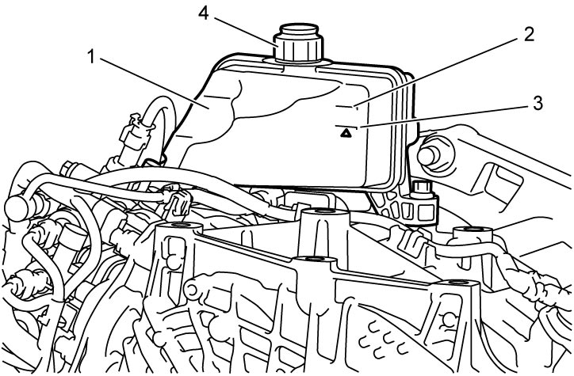

5F
| Twin Clutch System Actuation Fluid Level Check |
NOTE:
•To prevent any entry of impurities into reservoir, clean reservoir cap and its surrounding area before removing the cap.
•Check that engine is cold.
•Check that engine is cold.
1)Park vehicle on level surface, apply parking brake and stop engine.
2)Open the driver side front door, thereby the motor pump is operated automatically and the hydraulic circuit is pressurized.
3)Remove air cleaner bracket. 
4)Check twin clutch system actuation fluid level in reservoir (1) between “FULL” mark (2) and “LOW” mark (3) on reservoir.
If fluid level is below “LOW” mark, check each part for actuator fluid leakage.
If fluid level is below “LOW” mark, check each part for actuator fluid leakage.
5)Check that no leakage exists, and then remove reservoir cap (4) and add proper fluid to reservoir between “FULL” mark and “LOW” mark.

Twin clutch system actuation fluid specification
SUZUKI TWIN CLUTCH SYSTEM ACTUATOR FLUID 1001 or PETRONAS TUTELA CS SPEED:
990F0–TCSSA–000
Twin clutch system actuation fluid capacity including reservoir
Reference:
0.8 liter
(1.69/1.41 US/Imp. pt.)

 "Expand image")